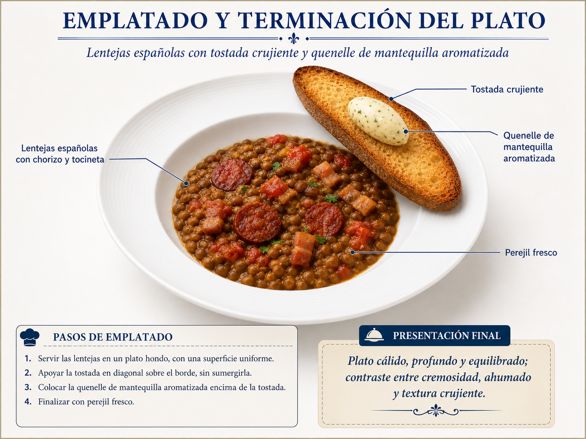
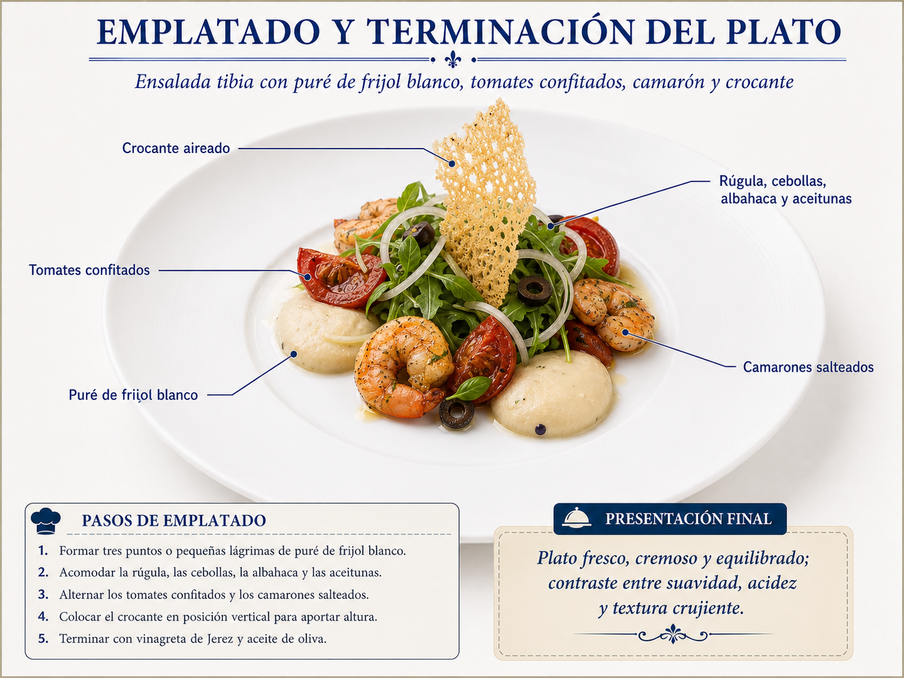

Brigada de cocina
Lentejas y ensalada tibia · Servicio de 7:30 a. m. a 9:00 a. m.
Progreso general de las dos recetas0 de 0 tareas · 0 %
Imágenes de las recetas
Referencia visual del resultado final de cada plato.


Lentejas y ensalada tibia · Servicio de 7:30 a. m. a 9:00 a. m.
Referencia visual del resultado final de cada plato.

